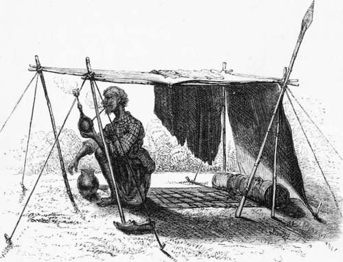

Chapter X. Part 2
Description
This section is from the book "Hog Hunting In The East, And Other Sports", by J. T. Newall. Also available from Amazon: Hog Hunting in the East, and Other Sports.
Chapter X. Part 2
Melton had got away after the companion, which took nearly in the same direction, and the two rode off to join in the pursuit, if possible, or give such assistance as might be required. Directed by the shouting of a few of the men, they made towards the jungle, and, after searching about for some time, saw Melton emerging from amidst the jow in the swamp. He had not obtained so good a start as Mowbray, and only overhauled his pig on the edge of the marsh, where he speared, and eventually finished it in the mud itself. It was a sow also, of nearly the same size as the other. Both were young, lanky, active animals, in fine running condition.
Efforts were made after this to find more pig, but without success, and the hunters returned to camp.
The snipers met with very fair sport. One of them left off early with twelve couple bagged, while the other two shot on till the afternoon, and killed forty-one couple between them, together with a hare and a few quail. There was a strong wind blowing all day, and the snipe were very wild ; which, combined with the difficulty of wading through the deep mud and the tangled jow bushes, rendered shooting no easy task ; many birds, too, were lost in the undergrowth. What struck all as being singular, and most unusual as far as their experience went, was, that the jacks were in proportion to the full snipe as four to one.
The tank shooters had been also fairly successful. One returned with eight and a half brace of duck and teal, three brace of partridge, two brace of quail, and a hare. The other had five brace of duck and teal, and a few couple of snipe and quail.
At the usual sederunt round the camp-fire after dinner, the future movements of the party were discussed, and the following arrangements arrived at. It was agreed that they should try and find a boar in the lower portion of the hills on the morrow, and afterwards ride in to Bhooj. The following day was Sunday, and this it was proposed to spend in cantonments, giving the tents and baggage time to march towards the Chitranu hills to the westward, in the district of Cutch, known as the " Arbrasser."
The curious old hill fort of Seesagud was named as the spot where the hunt should re-meet on the Monday evening. It was hoped pig would be found in the vicinity; and the cultivated land about Mhow and some of the neighbouring reedy nullahs were pretty sure to be well stocked with quail and a few blacks. About half-way there, also, the Charwa range of hills had to be crossed, and in them neilghye might with confidence be expected to be found. They were noted, too, as florikan ground during the monsoon months; but at this season these birds had migrated to other regions.
These matters decided, Manuel was first called and informed of the arrangements, and was desired to have the mess gear in marching order after an early breakfast next morning.
Natta was next called, but was reported to be at that moment in a delicate state of health. The informant supplemented this statement by observing that the old man complained of having a pig in his stomach at least, so the expression made use of sounded to several of the party.
" That's a queer complaint," said Hawkes ; " I shall go and have a look at the old fellow."
Accompanied by one or two others, he did so, and found the old fellow outside his diminutive dwelling;, lying extended at full length, with his stomach on the ground, and two of the shikarees alternately stamping on and kneading his back with their feet. This exceedingly uncomfortable-looking process was deemed, however, by both operated on and operators as a legitimate remedy for the malady complained of the result of hard work and abstinence.
It leaked out, however, that these remedial measures were considered neither the most certain or efficacious, and only resorted to in the absence of strong internal stimulant, such as brandy or other alcoholic stomachic.
On this hint, Hawkes ordered some brandy; and a glass or two tossed into the wizened stomach of the old man, had a marked revivifying effect, and obviated the necessity of being any further walked upon.
Natta At Home.
"When made aware of the proposed change, the old shikaree was good enough to intimate his entire approval of the scheme, and expressed himself as certain to show a fine boar to the hunters in the hills on the day following, if good pugging could do it.
In recounting the particulars of the day's sport,
Stewart mentioned two particularly successful shots he had made.
" I was beating the high grass in the vicinity of Rhoda tank," he said, " and had just knocked over a quail with my right barrel, when I heard a whirring overhead, and a flock of teal swept down towards the tank. I had just time to pour in the contents of my left barrel before they were out of reach, and down came three into the grass. I afterwards went down to the river, towards which numerous flocks of ducks had gone, beating against the wind in long irregular lines. There I obtained another successful shot at a flock of teal, which rose from a pool in the face of the wind, and then circled round just above a cliff which overhung the river. A longish shot dropped several on to the top of the cliff, I being at the bottom ; and, on searching there, we picked up four. Not quite such a successful shot as that of Mackenzie yesterday, but still resulting in very nice additions to the bag. Out of my seventeen duck and teal, I had five or six different species."
" The variety of duck to be found in India is certainly very great," said Melton. " But I think in no country have I found it more so than in that of the Upper Indus and its tributaries. I recollect five being shot off a small pool near Attock, each one of a different species ; and I myself had once a most enjoyable morning's duck shooting during the Umbeyla campaign, at the month of the Sirun, at Torbela, in the Upper Hazara country. On that occasion, out of eight couple bagged, seven different species were found, including, I remember, a splendid specimen of the great mountain mallard.
Continue to:
- prev: Chapter X
- Table of Contents
- next: Chapter X. Part 3